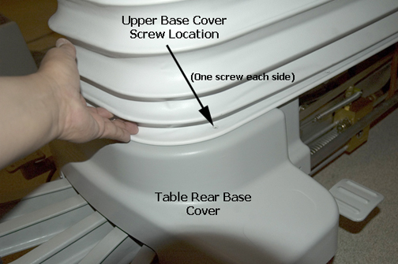
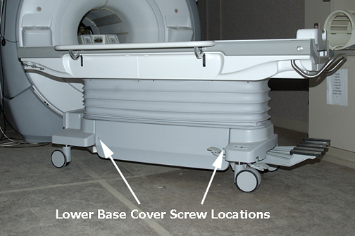
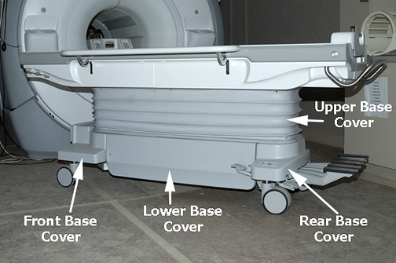

Operating Documentation
Direction 5670000, Rev# 1
Optima MR450w 1.5T Service Methods
Module Version 2.0, Version Date 7/16/08
Operating Documentation |
| Required Persons | Preliminary Reqs | Procedure | Finalization |
|---|---|---|---|
| 1 | Not Applicable | 5 minutes (each) | Not Applicable |
In this procedure, there are two types of action you perform. For the Lower Base Side cover, you remove one or both of them. However, for the Upper Bellows, you fasten it in an up position.
The Upper Bellows, an accordion style cover, can be positioned up or down depending on the type of servicing needed. The Lower Base Side Cover is a solid single cover that runs the length of the lower chassis from the front caster assembly to the rear caster assembly on each side.
| Item | Qty | Effectivity | Part# | Manufacturer | |
|---|---|---|---|---|---|
| Non-magnetic Service Tools | 1 | - | 5112581 | - | |
Depending on servicing needs, the Patient Table may be docked or undocked.
Remove four screws (two at front, two at rear) that connects the bottom end of the Upper Bellows to the top of the Lower Base Side Cover. See Illustration 1.
Illustration 1: Upper Bellows Screws

To fasten the Upper Bellows in an up position, lift the bellows from the bottom of both sides and use the Velcro straps located on the inside of the bellows to secure the cover in place.
Remove four screws (two at front, two at rear) that connects the bottom end of the Upper Bellows to the top of the Lower Base Side Cover.
| NOTE: | Once you remove the four screws from the bottom of the Upper Bellows, you may or may not want to fasten the Upper Bellows in an up position with the Velcro straps. |
On the left or right side of the table, remove two screws from the Lower Base Side Cover. See Illustration 2.
Illustration 2: Lower Base Side Cover Screws

Lift Lower Base Side Cover off of front and rear guide studs on the Front and Rear Base Covers.
Illustration 3: Front and Rear Base Covers

No finalization steps.